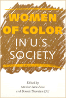

<body bgcolor="#FFFFFF" text="#000000" link="#0000FF" vlink="#CC0000" alink="#CC0000"><center><hr width="350" size="1" align="center" noshade>Women of color articulate shared experiences of subordination and survival<hr width="350" size="1" align="center" noshade><p><a href="https://cdcshoppingcart.uchicago.edu/Cart/ChicagoBook.aspx?ISBN=9781566391054&&PRESS=temple" target="_top">Buy this book!</a> | <a href="https://cdcshoppingcart.uchicago.edu/Cart/Cart.aspx?PRESS=temple" target="_top">View Cart</a> | <a href="https://cdcshoppingcart.uchicago.edu/Cart/Cart.aspx?PRESS=temple" target="_top">Check Out</a></p><p></p></center><!--none//--><h1>Women of Color in U.S. Society</h1>
<h3>edited by Maxine Baca Zinn and Bonnie Thornton Dill</h3>
<P>cloth 1-56639-105-9 $71.50, Dec 93, <FONT COLOR=#990033>Out of Stock Unavailable</FONT>
<br>paper 1-56639-106-7 $35.95, Dec 93, <FONT COLOR=#990033>Available</FONT>
<br>Electronic Book 1-43990-154-6 $35.95 <FONT COLOR=#990033>Out of Stock Unavailable</FONT>
<BR> 360 pp
6x9
25&nbsp;tables
</P><BLOCKQUOTE><I>"This far-ranging and well-documented book explores race, class and gender as systems of oppression against women of color in the United States....[A]n important addition to the literature of women's studies."</I>
<br>&#151<b><I>Publishers Weekly</I></b><I></I></BLOCKQUOTE>
<p>The theme of race, class, and gender as interlocking systems of oppression unites these original essays about the experience of women of color&#151African Americans, Latinas, Native Americans, and Asian Americans. The contributing scholars discuss the social conditions that simultaneously oppress women of color and provide sites for opposition.
<p>Though diverse in their focus, the essays uncover similar experiences in the classroom, workplace, family, prison, and other settings. Working-class women, poor women, and professional women alike experience subordination, restricted participation in social institutions, and structural placement in roles with limited opportunities.
<p>How do women survive, resist, and cope with these oppressive structures? Many articles tell how women of color draw upon resources from their culture, family, kin, and community. Others document defenses against cultural assaults by the dominant society&#151Native American mothers instilling tribal heritage in their children; African American women engaging in community work; and Asian American women opposing the patriarchy of their own communities and the stereotypes imposed by society at large.
<p>These essays challenge some of our basic assumptions about society, revealing that experiences of inequality are not only diverse but relational.
<BR>&nbsp;<h2>Excerpt</h2><P>Excerpt available at <a href="http://www.temple.edu/tempress">www.temple.edu/tempress</a></p>
<BR>&nbsp;<h2>Reviews</h2>
<p><I>"[T]his collection should be welcomed by all those concerned with issues of race, gender, and class in American society. It presents a wealth of information, data, and analysis in direct, refreshingly jargon-free language, and would make an excellent text for undergraduate courses in sociology, women's studies, and ethnic studies."</I>
<br>&#151<b><I>Contemporary Sociology</I></b>
<p><I>"This book will be extremely important in the growing literature that examines the intersections of race, class, and gender stratification.... The list of contributors includes some of the most significant writers working in this field."</I>
<br>&#151<b>Margaret L. Anderson</b>, University of Delaware
<p><I>"A volume like this is badly needed in women's studies and ethnic studies because the emphasis...has been on...white women and racial-ethnic men, respectively. The book's greatest importance lies in its political significance. It has the potential of forcing modification of many assumptions on which contemporary feminism is based. And the more such theories emanate from and are applicable to the lives of diverse American women, the ore profound and useful they will be."</I>
<br>&#151<b>Judith Rollins</b>, Simmons College
<BR>&nbsp;<h2>Contents</h2><P>
<p>Preface
<br>Foreword &#150 Patricia Hill Collins
<p><b>Part I: Introduction</b>
<br>1. Difference and Domination &#150 Maxine Baca Zinn and Bonnie Thornton Dill
<br>2. Women of Color: A Demographic Overview &#150 Vilma Ortiz
<p><b>Part II: The Constraining Walls of Social Location</b>
<br>3. Helpers, Enforcers, and Go-Betweens: Black Females in Elementary School Classrooms &#150 Linda Grant
<br>4. Hiring Immigrant Women: Silicon Valley’s "Simple Formula" &#150 Karen J. Hossfeld
<br>5. Inside the Work Worlds of Chicana and Mexican Immigrant Women &#150 Denise A. Segura
<br>6. Black Professional Women: Job Ceilings and Employment Sectors &#150 Elizabeth Higginbotham
<br>7. Puerto Rican Families and Social Well-Being &#150 Ruth E. Zambrana
<p><b>Part III: Social Agency: Confronting the "Walls"</b>
<br>8. Fictive Kin, Paper Sons, and <I>Compadrazgo</I>: Women of Color and the Struggle for Family Survival &#150 Bonnie Thornton Dill
<br>9. Black Women in Prison: The Price of Resistance &#150 Regina Arnold
<br>10. Cultural Survival and Contemporary American Indian Women in the City &#150 Jennie R. Joe and Dorothy Lonewolf Miller
<br>11. Asian American Women at Work &#150 Esther Ngan-Ling Chow
<br>12. "If It Wasn’t for the Women...": African American Women, Community Work, and Social Change &#150 Cheryl Townsend Gilkes
<br>13. Migration and Vietnamese American Women: Remaking Ethnicity &#150 Nazli Kibria
<p><b>Part IV: Rethinking Gender</b>
<br>14. Images, Ideology, and Women of Color &#150 Leith Mullings
<br>15. Different Voices, Different Visions: Gender, Culture, and Moral Reasoning &#150 Carol B. Stack
<br>16. Feminist Rethinking from Racial-Ethnic Families &#150 Maxine Baca Zinn
<p>About the Contributors
<br>Index
</P><BR>&nbsp;<H2>About the Author(s)</H2>
<P><b>Maxine Baca Zinn</b> is Professor of Sociology at Michigan State University.</P>
<P><b>Bonnie Thornton Dill</b> is Professor of Women's Studies at the University of Maryland.</P>
<P>Contributors: Regina Arnold, Esther Ngan-Ling Chow, Patricia Hill Collins, Cheryl Townsend Gilkes, Linda Grant, Elizabeth Higginbotham, Karen Hossfield, Jennie R. Joe, Nazli Kibria, Dorothy Lonewolf Miller, Leith Mullings, Vilma Ortiz, Denise Segura, Carol B. Stack, Ruth Zambrana, and the editors.</P>
<BR><H2>Subject Categories</H2>
<p><A HREF="/tempress/women.html" TARGET="_top">Women's Studies</a>
<BR><A HREF="/tempress/sociology.html" TARGET="_top">Sociology</a>
<BR><A HREF="/tempress/african.html" TARGET="_top">African American Studies</a>
</p>
<BR><h2 class="inpageheading">In the series</H2>
<P><I><a href="http://www.temple.edu/tempress/women_political.html" onMouseOver="window.status='Click for other books in this series!'; return true;" onMouseOut="window.status=''; return true;" target="_top">Women in the Political Economy</a></i>, edited by Ronnie J. Steinberg.
</p><p>No longer active.<p><i>Women in the Political Economy</i>, edited by Ronnie J. Steinberg, includes books on women and issues of work, family, social movements, politics, feminism, and empowerment. It emphasizes women's roles in society and the social construction of gender and also explores current policy issues like comparable worth, international development, job training, and parental leave.</p>
<p align="center"><a href="https://cdcshoppingcart.uchicago.edu/Cart/ChicagoBook.aspx?ISBN=9781566391054&&PRESS=temple" target="_top">Buy this book!</a> | <a href="https://cdcshoppingcart.uchicago.edu/Cart/Cart.aspx?PRESS=temple" target="_top">View Cart</a> | <a href="https://cdcshoppingcart.uchicago.edu/Cart/Cart.aspx?PRESS=temple" target="_top">Check Out</a></p><p><font face="Arial" size="1"><a href="copyright.html" onMouseOver="window.status='Web Copyright Policy';return true;" onMouseOut="window.status=''" title="Web Copyright Policy">&copy;</a> 2015 <a href="http://www.temple.edu" target="new" onMouseOver="window.status='Link to Temple University home page';return true;" onMouseOut="window.status=''" title="Link to Temple University home page">Temple University</a>. All Rights Reserved. http://www.temple.edu/tempress/titles/657_reg.html</font></p>